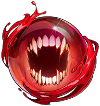
Appétit du Prédateur écarlate
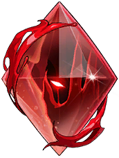
Châtiment du Prédateur écarlate
Corne du démon anonyme
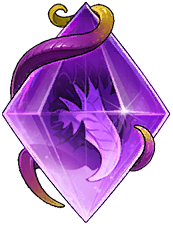
Dents du Veilleur
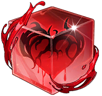
Désirs du Prédateur écarlate
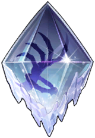
Énergie de mana du spectre antique
Magisphère du démon anonyme
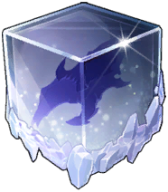
Main droite du spectre antique
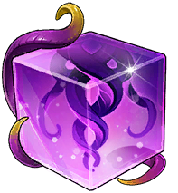
Membres du Veilleur
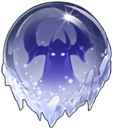
Obsession du spectre antique
Tromperie du démon anonyme
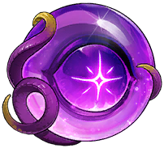
Yeux du Veilleur
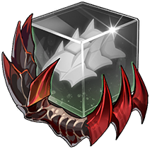
Armure du Protecteur féroce
Désir du Protecteur féroce
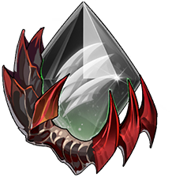
Griffe du Protecteur féroce
Réflexion du Dominateur arrogant
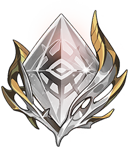
Regard du Dominateur arrogant
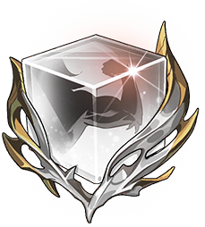